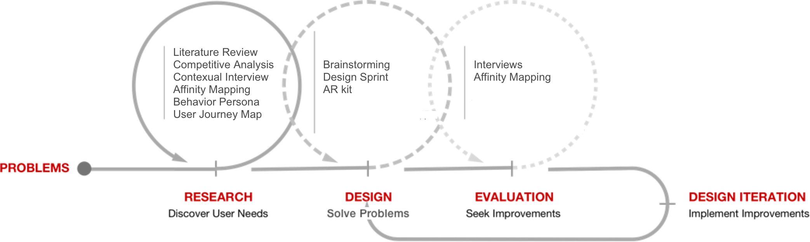
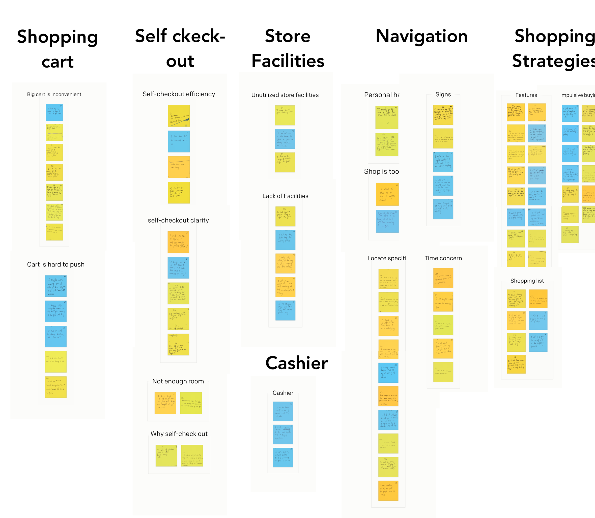
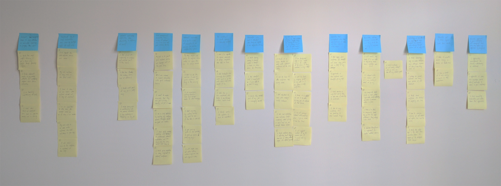
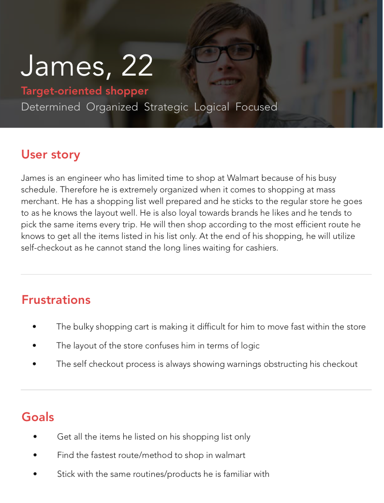
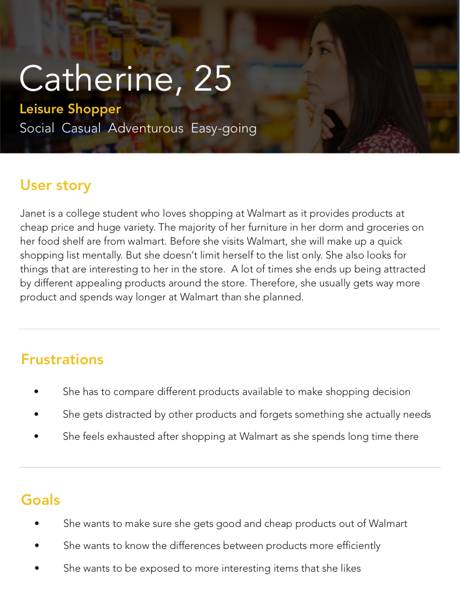
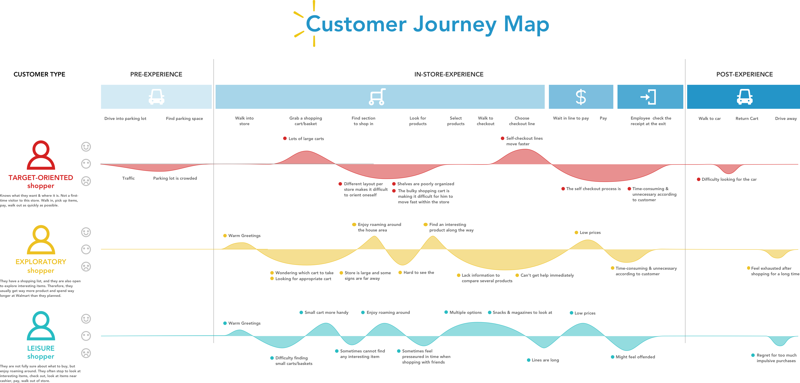
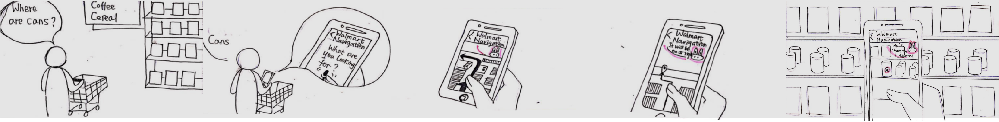
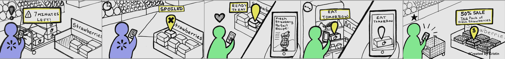
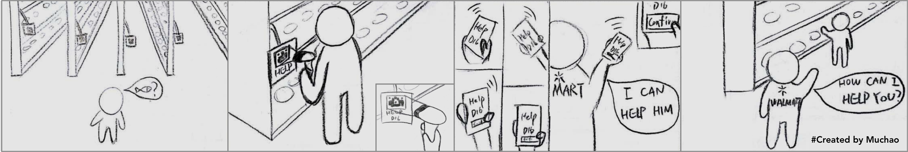

OVERVIEW
Problem Space
Mary finds her windshield cleaner has ran out so she decides to go to the nearby Walmart to purchase it. However, when she gets there she circled 3 rounds but still couldn’t find windshield. She asks a nearby associate. But the associate is busy cleaning up the shelf and seems tired.
The shopping experience at store always consists of two parts, customers and associates. Our team wanted to understand the needs of both customers and associate, coming up with a design benefiting both of them.
Methodology
{kind=link}
Outcomes
Our solution is OmniAR, a AR experience helping customers to complete self-guided efficient shopping. It also reduces the burden of Walmart associates and better their work experience. Since AR technology currently isn't matured enough our team didn't select a specific product as the platform of our AR experience.
RESEARCH
In this project we conducted a lot of research, literature review, comeptitive analysis, contecual interview, etc. Literature review helps us understand the whole picture of Whole Sale companies. They try to create a seamless experience of online and offline shopping experience. Competitive analysis helps us understand the storage/ shipping strategy, benefit plan of employees, membership policy, which gives us a general idea of the strenghth and weakness of Walmart and its competitors. The in-store research (contexual interviews of customers and associates) further digs out the detaild unideal shopping experience and help us understand where to improve. CHECK INTERVIEW DETAILS.
Contexual Interview and Affinity Mapping - Customer Side
{kind=link}
Contexual Interview and Affinity Mapping - Associate Side
{kind=link}
However, in the research we had a challenge to define the target user and identify the key problems. Walmart just has a really wide range of customer. A traditional behavioralPersona ( who has representitive gender, age, professionals, etc.) doesn't work at all. So we decided to classify customers based on their behavior pattern.
Target User/Behavioral Persona
We created three behavioralPersona for this project, the target-oriented shopper, leisure shopper and exloratory shopper.
Target-oriented Shopper
{kind=link}
Leisure Shopper
{kind=link}
Exploratory Shopper

User Needs/User Journey Map
{kind=link}
How to Efficiently Conduct Research When We Collaborate with Real Clients?
In this project, we collaborated with real clients, Walmart. We needed to obtain their permission to conduct in-store research. So we reached out to the store manager and politely made our request in an early time. However, it still took several weeks for them to respond us. It would be a waste of time if we just waited for the answer. So we decided to conduct literature review and competitive analysis to understand the whole picture.
It is important to conduct field research when we design for users we don't really know well. But until this project I understand how important it is to schedule the collaborative research in advance and contact our partner in time.
DESIGN
Brainstorming
User journey helps us defined some major problems and we had a brainstorming session to have innovative ideas. Wen then sorted ideas based on the feasibility and its efficiency of solving the problems. However, different idea's impact on each behavioralPersona is very different so we realized we had to pick up a major behavioralPersona. We finally chose the target-oriented behavioralPersona as our major behavioralPersona since we understood that Walmart's strengths are low price and wide range of products through competitive analysis. For the other two behavioralPersona who would like to leisurely shop at supermarket they could have more pleasant experience at Walmart's competitor who pay more attention on interior design. For the same reason, we gave up a really interesting game idea which makes the shopping experience an adventure.
For the target-oriented shopper, they only want to get the items on their shopping list and want to get everything efficiently. However, it's almost impossible in Walmart if they want to purchase something they don't routinely buy. And asking for associates' help are not always helpful since Walmart associates usually has its specific role and only be familiar with certain zone. In our interviews, the associates also told us they would like to help customers but sometimes they also need to get some rest. They also expressed that they would be happy if their effort are acknowleged. Thus, we finally kept three major ideas which address problems for both sides.
{kind=link}
1. AR Navigation
{kind=link}
AR navigation helps customers to optiize their routes based on their shopping list they prepared before they come to Walmart. It also helps the customers to spot the specific item they want to purchase on the shelf. The self-guided experience improves efficiency of target-oriented shoppers' shopping experience. Meantime it doesn't put on too much additional workload on Walmart associate therefore would allow associates enjoy most of their rest time and provide better service when they get back to their position.
2. Food Finder
{kind=link}
For specific item such as fresh produce, it is important to identify the freshness of it for both customers and associates. For customers, if they purchase expiring fresh produce they will lose confidence of Walmart quality. For associates, some of their responsibilities are taking foods back and forth to keep them fresh. Currently it is really hard to keep track of each row of fresh produce and take them back to frozen area in time. Thus, we proposed the status annotation feature.
Another pain for customers are selecting items since their are so many brands/flavors. So here we proposed a food suggestion feature to provide some useful information such as "best seller" or "lowest fat" to help customers to make decisions.
3. Easy Help
{kind=link}
Sometimes the problem customers encounter have to be dealt with associates. For example, when the items are not on shelf customers have to ask associates to see whether the item is out of stock. So here we proposed the easy help feature for customers to get access to nearby associates who are responsible for this area and currently in working status.
AR Kit
After we decided to go with the AR concept, the first thing we did was conducting research on the existing AR/VR device. The majority is a combination of headset + handle, such as HTC Vive, Oculus Rift, Gear VR, play station VR. Google cardboard also plan to have remote controller to their pure cardboard. However, our solution doesn’t require much gesture. The interaction could be completed with eye tracking or voice interaction. So a google glass like product is what we expect. Thus, we referred the glass design principles. Here are the main principles:
- Don't get in the way
- Keep it relevant
- Avoid the unexpected
- Build for people

How We Prototype Our AR Concept Efficiently?
In this project, we only had about two weeks to build the prototype. However, different from traditional 2D prototype, 3d prototype tools hasn’t been fully developed. The common tools like Unity, Maya and Unreal has a steep learning curve which means it would be hard for us to get started and successfully deliver our idea with it. We tried to rapid prototype the idea with Rhinoceros but the statics 3d model still seems not enough to explain our whole concept, especially the voice interaction part. So finally we decided to have a video which clearly explains the whole experience.
Design Iterations
First Iteration
Branding
Depth
Next Iteration
Understanding of AR/VR
Scenarios of AR/VR
AR device usually make use of people’s vision. It is used to add some additional meaning of the reality. Typical scenarios are translation, weather inquiry. But VR device always includes rich inputs and outputs, such as complicated gestures, sound. It totally exceeds the limited interaction of traditional electronic device and bring us to a new world. However, in current stage, we just completed basic ergonomics of VR device and still need a long time to explore/overcome the comfortability of VR device. But Google VR has provided us exciting use case of VR, the Google Earth, Tilt Brush, Expeditions. The key of VR is providing us perspectives which we usually don’t have (due to financial or technology restraints). I also have a feeling that VR device will bring us new format of social media (exceed simple 3d video) just like camera of mobile phone brings us story on Instagram/ snapchat.